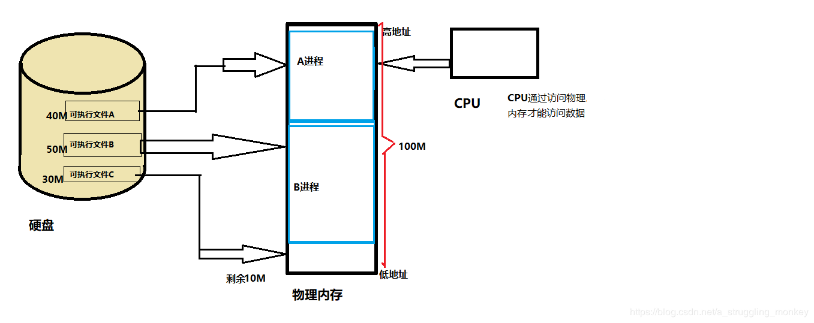
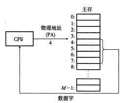
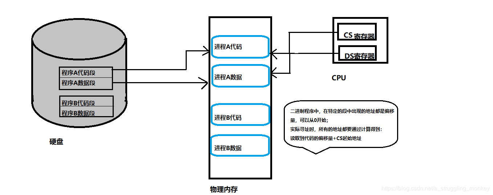
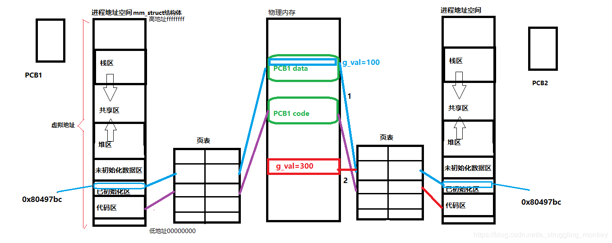
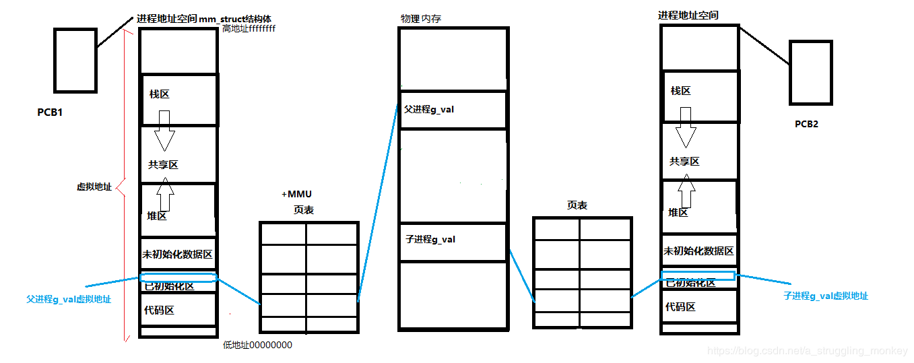

在一个系统中，进程是和其他进程共享CPU和主存资源。但是共享资源会造成一些不可避免的问题，例如由于存储器不够而 进程无法运行，亦或是存储器被外来的恶意进程破坏等。
早期的内存管理机制：
分派方式一：程序载入
1》CPU要访问进程中的数据，必须通过访问访问物理内存的方式（物理寻址）
当CPU要执行某条指令时，它会生成一个有效物理地址，通过存储器总线，把它传递给主存，主存取出从物理地址4处开始的四个字节的字，并将它返回给CPU，CPU会将它放在一个寄存器里。
2》一个程序要运行，必须把这些程序加载到内存中。
3》进程的地址空间是连续的。因为程序是直接访问物理内存，所以恶意的程序会随意修改别的进程的内存数据以达到破坏的目 的；有些程序不是恶意的，但有bug的程序也会有可能修改了其他程序的内存，危害系数高。
4》内存使用效率低。如上图，硬盘中三个可执行文件不能同时加载到内存中当A和B同时运行，如果还想运行C，就必须把已经运行过的A或B的数据暂时拷贝到硬盘上，释放出空间C才能加载到内存运行。
5》程序运行的地址是起始地址，而起始地址要加载到内存中才能确定。当A或者B释放出空间够C运行时，操作系统会在这段空 间中随机分配连续的30M的空间给C程序，由于是随机分配，所以程序运行的地址并不能确定。
分派方式二：段式管理
说明：
●把程序和内存通过某种关系进行分段，每段有独立的名字，如代码段、数据段。
●在编写的时候，只要指明了所属的段，代码段和数据段中出现的所有地址。都是从0开始，操作系统维护其映射关系。
●由于CPU将内存分割成不同的段，因此数据指令的有效地址并不是真正的物理地址，而是相对地址（相对于段首0的偏移地址）。
优点：
1》可以分别编写和编译。
2》由于段寄存器的存在，使得进程的地址空间得以隔离，越界问题就可以被判定出来。
3》实际代码和数据中的地址都是偏移量，第一条指令从0开始，而实际的物理地址可以通过计算得出，解决了程序运行地址不确定的问题。
缺点：
分段管理在内存空间不足时，依旧要唤出整个程序或者整个程序段，在工程量大的情况下，就会造成内存和硬盘之间数据的大量拷贝，导致时间和效率都不高，进而影响性能。
虚拟地址空间的提出
为了改善早期内存管理机制而造成的性能问题，为了保护物理内存，提出了虚拟地址空间的概念。
增加一个中间层，利用间接的地址访问方法访问物理内存：程序中访问的内存地址不再是实际的物理内存地址，而是一个虚拟地址，然后由操作系统将这个虚拟地址映射到合适的物理内存地址上。这样一来，只要操作系统处理好虚拟地址到物理地址的映射关系，就可以保证不同的程序最终访问不同的区域，从而达到内存地址空间的隔离。

上图就是进程的虚拟地址空间，它并不是内存！！而是一个结构体（mm_struct)。
进程的虚拟地址空间是连续的，地址从00000000到ffffffff，共有2^31字节个地址，也就是4G，每一块空间可以用初始地址和终止地址来表示这块区域。
分析一段代码：
#include<stdio.h>
#include<unistd.h>//unistd.h是linux下的
int g_val=100;
int main()
{
pid_t id=fork();
if(id==0){//child
printf("I am child,pid:%d,g_val:%d,&g_val:%p\n",getpid(),g_val,&g_val);
sleep(2);
}else{//parent
sleep(3);
printf("I am parent,pid:%d,g_val:%d,&g_val:%p\n",getpid(),g_val,&g_val);
sleep(1);
}
return 0;
}
输出结果：
结果看出，父进程和子进程输出的变量值都是一样的。很好理解，因为子进程以父进程为模板，父子进程没有对变量进行任何修改。
● 回顾内容：父进程创建出子进程，代码共享，数据以写时拷贝的方式各自私有一份。
写时拷贝：只有需要的时候再给，物尽其用；只有要修改的时候才复制一份父进程的内容。
如果上述代码子进程将全局变量g_val进行修改：
#include<stdio.h>
#include<unistd.h>
int g_val=100;
int main()
{
pid_t id=fork();
if(id==0){//child
g_val=300;
printf("I am child,pid:%d,g_val:%d,&g_val:%p\n",getpid(),g_val,&g_val);
sleep(2);
}else{//parent
sleep(3);
printf("I am parent,pid:%d,g_val:%d,&g_val:%p\n",getpid(),g_val,&g_val);
sleep(1);
}
return 0;
}
输出结果：
从结果可以看出，因为子进程对变量进行了修改，因此变量值不同，但输出的地址依旧相同。
1》父子进程输出变量值不一样，说明输出的变量不是同一个变量。
2》输出地址相同但变量值不同，说明这个输出的地址一定不是物理地址，这个地址叫做虚拟地址（不是真实存在的）。
3》物理地址存在于物理内存中，同理，虚拟地址存在于虚拟地址空间中。要进行数据访问，必须由操作系统将虚拟地址转化为物理地址。
4》我们在C语言和C++中看到的地址都是虚拟地址。
5》用户是看不到物理地址的，物理地址由操作系统统一管理。
上面的例子我们用地址空间简单表示：
●第一次是父子进程将虚拟地址通过页表映射到了同一个物理地址，实现了共享。
●第二次子进程修改了变量，父子进程以写时拷贝的方式私有数据，相同的虚拟地址被映射到不同的物理地址，实现了私有。

虚拟地址空间：
同一个变量，地址相同其实是虚拟地址相同，内容不同是因为OS通过页表和+MMU将虚拟地址映射到了不同的物理地址。
操作系统是通过软硬件结合的方式完成了映射。（软件：页表 硬件：MMU）